Procedural model production · 88 low-poly assets · shared texture families · instanced scenes
Gameplay contract: preserve the existing lever-driven rising gate and collision. The current map has no Sluice handwheel spawner and places the gate above the planned deck. Stored wheel art is a noninteractive spare. No static replacement leaf is installed over the moving gate.
1,216 placements across 73 HISM groups in three existing district Level Instances. Standing-height spectator views captured in PIE; walking and interaction acceptance remain separate.
Exact production dimensions, materials and pivots below. Clicking an image opens the full asset preview.
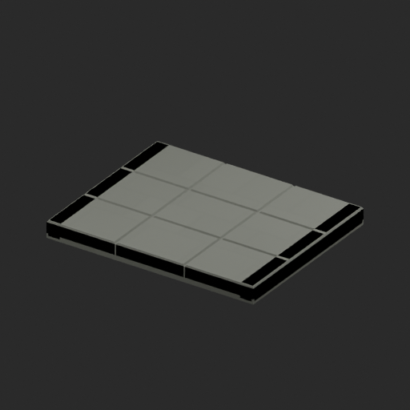
CCS01 · CausewayDeckBay
280 triangles · 250.0 × 200.0 × 20.0 cm
top contact · TX02
FBX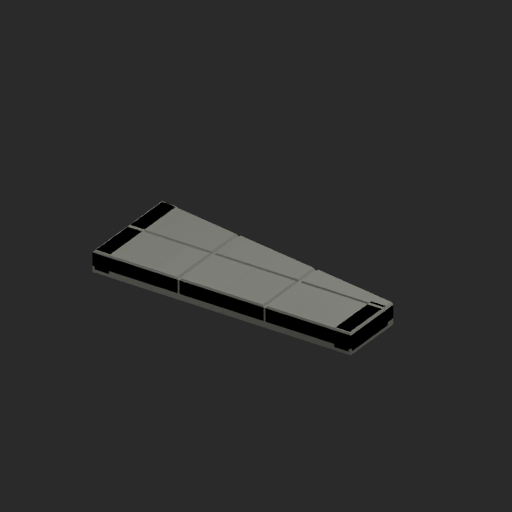
CCS02 · CausewayEndClosure
220 triangles · 250.0 × 100.0 × 20.0 cm
top contact · TX02
FBX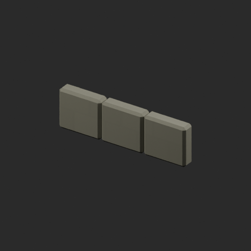
CCS03 · DeckEdgeFascia
132 triangles · 200.0 × 20.0 × 60.0 cm
bottom center · TX01
FBX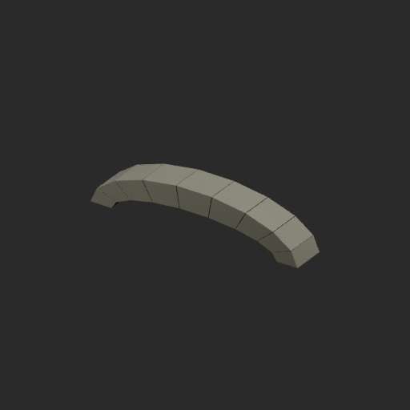
CCS04 · DeckUndersideRib
108 triangles · 250.0 × 40.0 × 50.0 cm
bottom center · TX01
FBX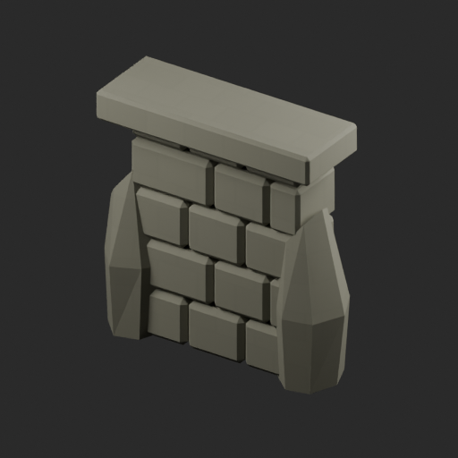
CCS05 · BankAbutment
780 triangles · 300.0 × 100.0 × 300.0 cm
bottom center · TX01
FBX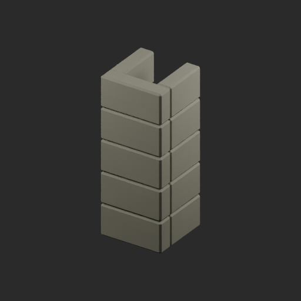
CCS06 · SupportPierShell
660 triangles · 120.0 × 120.0 × 300.0 cm
bottom center · TX01
FBX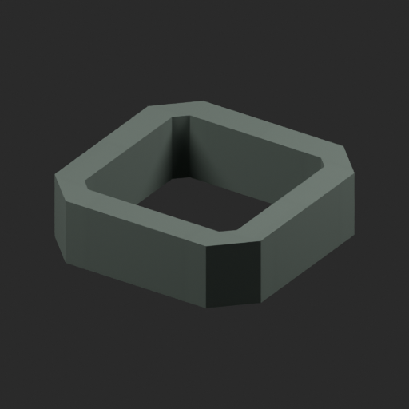
CCS07 · PierWaterlineCollar
64 triangles · 140.0 × 140.0 × 40.0 cm
bottom center · TX17
FBX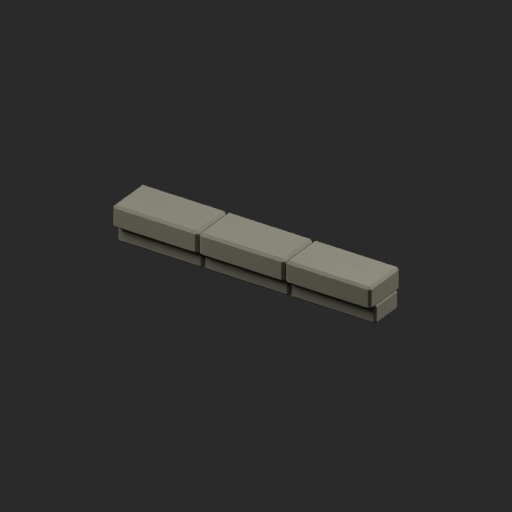
CCS08 · BankCopingStrip
264 triangles · 200.0 × 35.0 × 30.0 cm
bottom center · TX01
FBX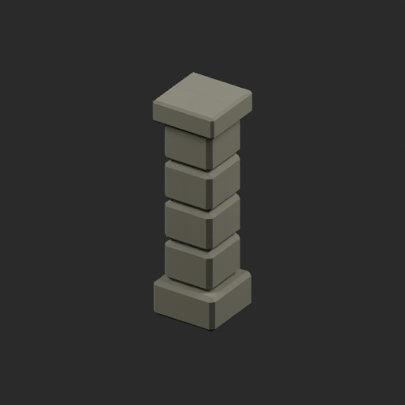
CCS09 · RailPost
264 triangles · 30.0 × 30.0 × 100.0 cm
bottom center · TX01
FBX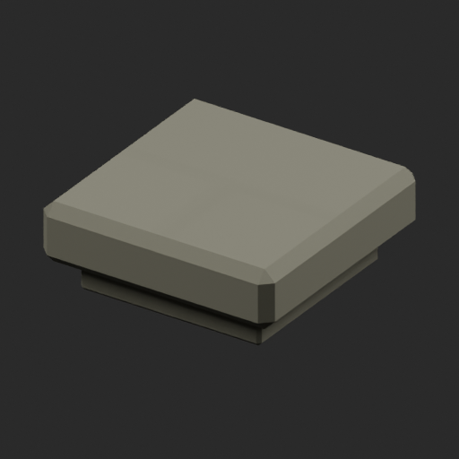
CCS10 · RailCap
88 triangles · 40.0 × 40.0 × 15.0 cm
bottom center · TX01
FBX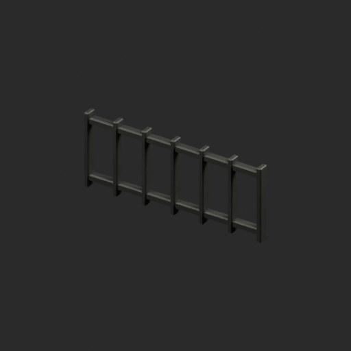
CCS11 · RailInfillBay
396 triangles · 200.0 × 12.0 × 80.0 cm
bottom center · TX09
FBX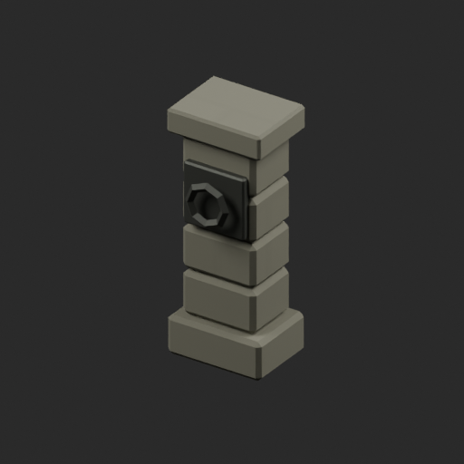
CCS12 · RailEndTerminal
372 triangles · 40.0 × 35.0 × 100.0 cm
bottom center · TX01, TX09
FBX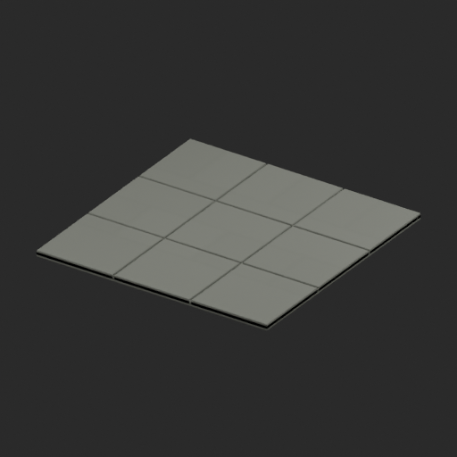
CCS13 · RoomFloorBay
192 triangles · 200.0 × 200.0 × 5.0 cm
top contact · TX02
FBX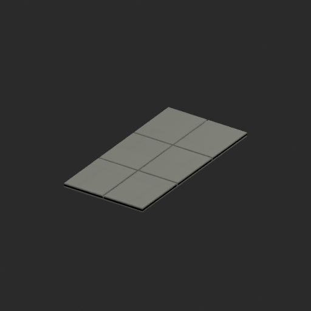
CCS14 · FloorFillerBay
132 triangles · 100.0 × 200.0 × 5.0 cm
top contact · TX02
FBX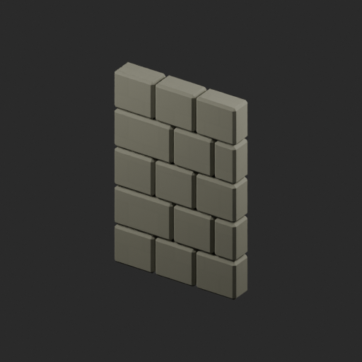
CCS15 · RoomWallBay
660 triangles · 200.0 × 35.0 × 300.0 cm
bottom center · TX01
FBX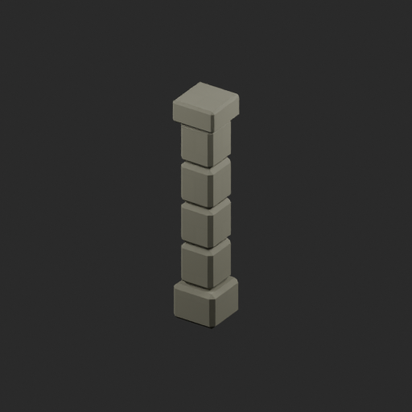
CCS16 · WallCornerPier
264 triangles · 60.0 × 60.0 × 300.0 cm
bottom center · TX01
FBX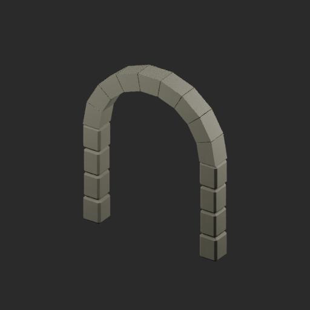
CCS17 · ArchSurround
460 triangles · 300.0 × 40.0 × 350.0 cm
bottom center · TX01
FBX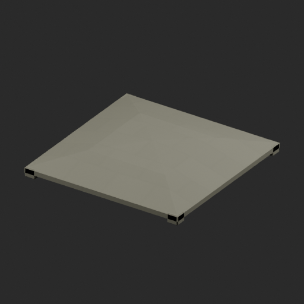
CCS18 · VaultCeilingBay
368 triangles · 200.0 × 200.0 × 30.0 cm
bottom center · TX01
FBX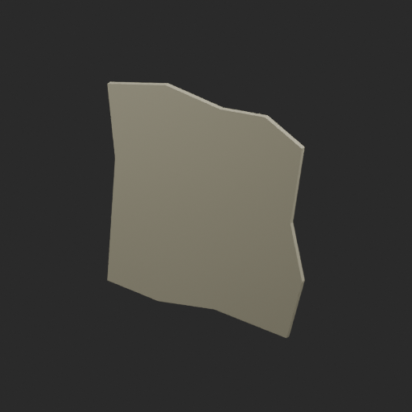
CCS19 · PlasterRepairPatch
44 triangles · 150.0 × 3.0 × 160.0 cm
bottom center · TX03
FBX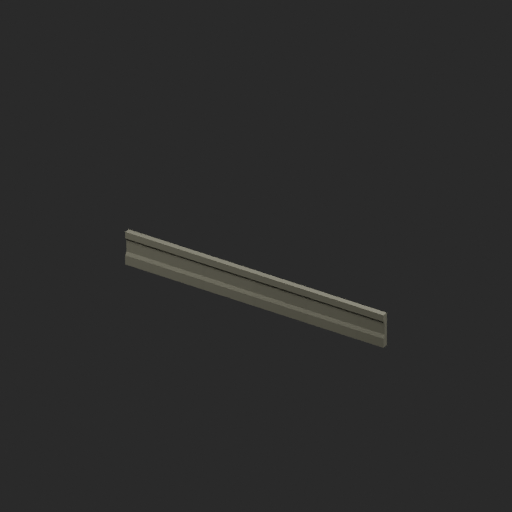
CCS20 · StairAndThresholdFascia
28 triangles · 250.0 × 5.0 × 30.0 cm
top contact · TX01
FBX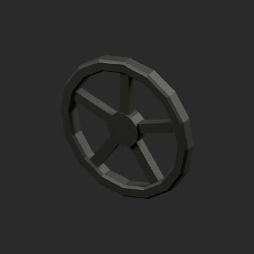
CCS21 · HandwheelBody
360 triangles · 50.0 × 5.0 × 50.0 cm
center · TX09
FBX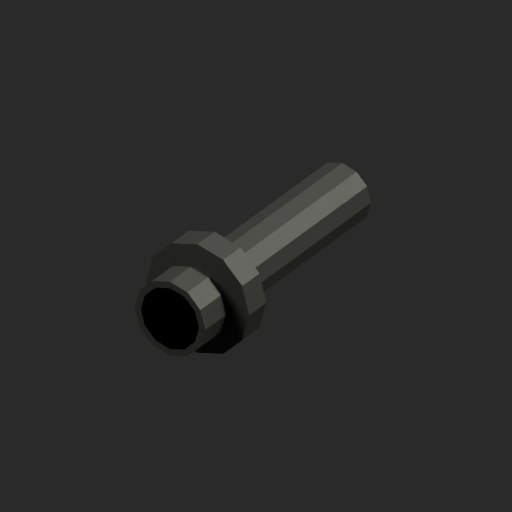
CCS22 · WheelAxleStub
132 triangles · 12.0 × 30.0 × 12.0 cm
center · TX09
FBX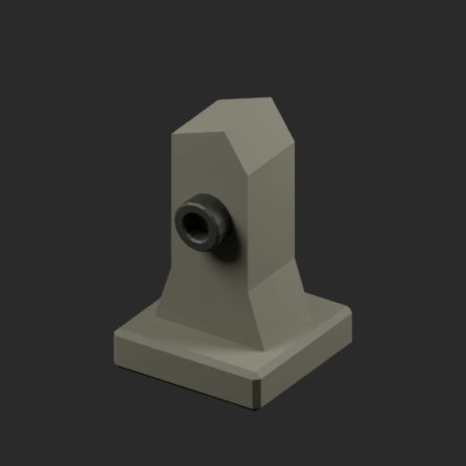
CCS23 · WheelMountHousing
324 triangles · 100.0 × 100.0 × 160.0 cm
bottom center · TX01, TX09
FBX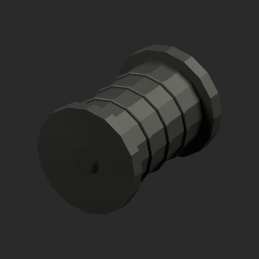
CCS24 · ChainDrum
1036 triangles · 60.0 × 80.0 × 60.0 cm
center · TX09
FBX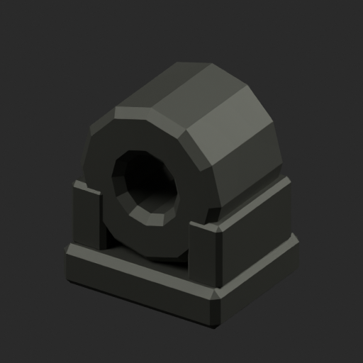
CCS25 · AxleBearingBlock
364 triangles · 30.0 × 25.0 × 35.0 cm
center · TX09
FBX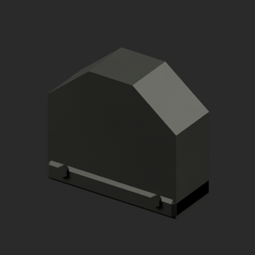
CCS26 · PawlCover
104 triangles · 45.0 × 20.0 × 40.0 cm
bottom center · TX09
FBX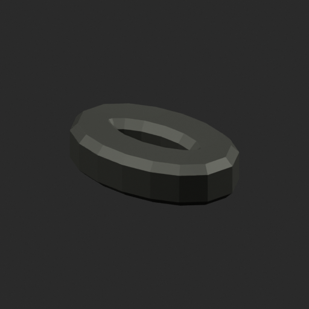
CCS27 · HeavyChainLink
256 triangles · 32.0 × 20.0 × 8.0 cm
center · TX09
FBX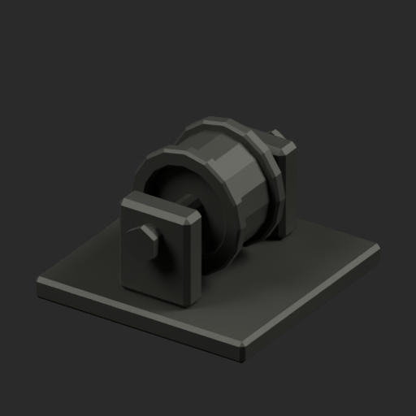
CCS28 · ChainCornerGuide
788 triangles · 60.0 × 60.0 × 40.0 cm
bottom center · TX09
FBX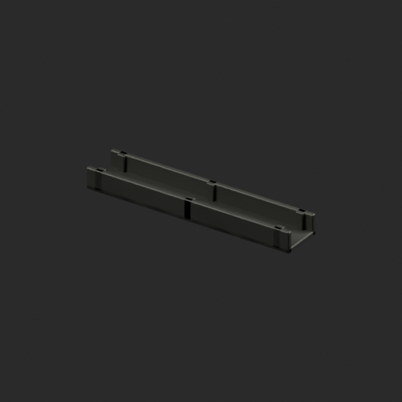
CCS29 · FloorChainGuide
396 triangles · 200.0 × 40.0 × 20.0 cm
bottom center · TX09
FBX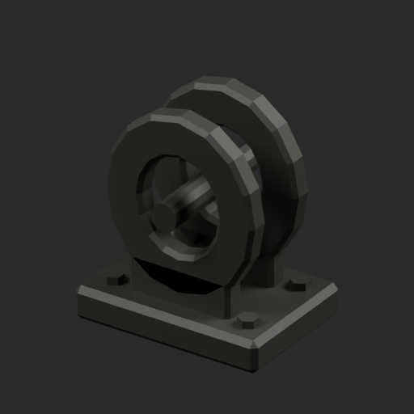
CCS30 · ChainEndAnchor
768 triangles · 35.0 × 25.0 × 40.0 cm
bottom center · TX09
FBX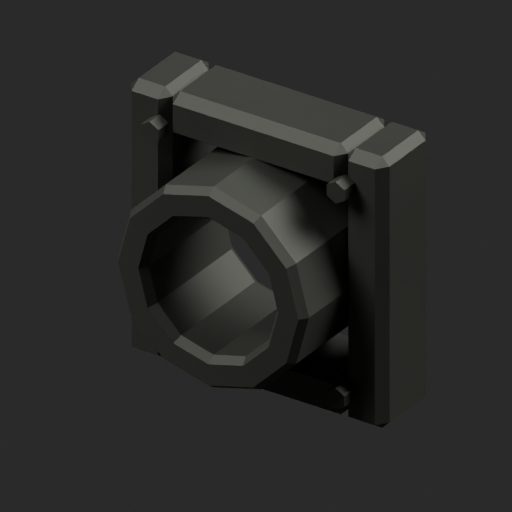
CCS31 · WallFairlead
448 triangles · 45.0 × 25.0 × 45.0 cm
bottom center · TX09
FBX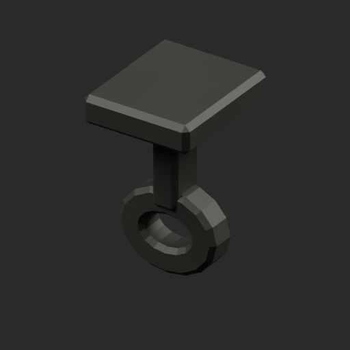
CCS32 · OverheadChainHanger
384 triangles · 30.0 × 35.0 × 50.0 cm
bottom center · TX09
FBX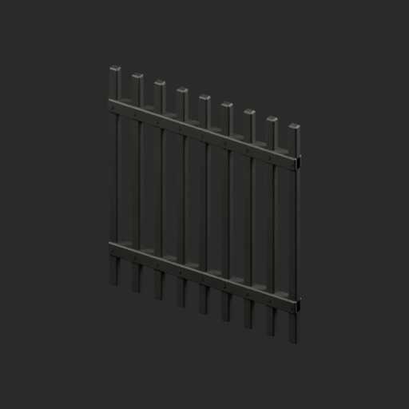
CCS33 · RisingBarGateLeaf
844 triangles · 200.0 × 12.0 × 220.0 cm
bottom center · TX09
FBX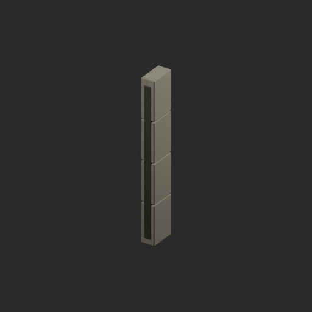
CCS34 · GateFramePost
220 triangles · 20.0 × 40.0 × 240.0 cm
bottom center · TX01, TX09
FBX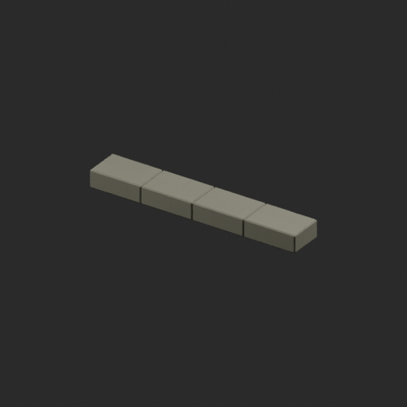
CCS35 · GateLintel
176 triangles · 240.0 × 40.0 × 20.0 cm
bottom center · TX01
FBXCCS36 · GateGuideChannel
308 triangles · 15.0 × 20.0 × 440.0 cm
bottom center · TX09
FBX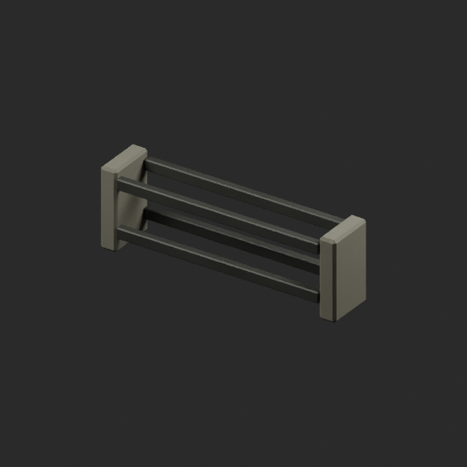
CCS37 · GateTopHood
264 triangles · 240.0 × 50.0 × 80.0 cm
bottom center · TX01, TX09
FBX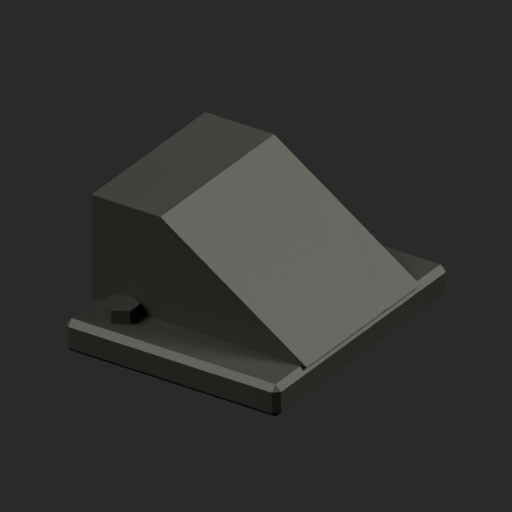
CCS38 · GateStopShoe
96 triangles · 25.0 × 30.0 × 15.0 cm
bottom center · TX09
FBX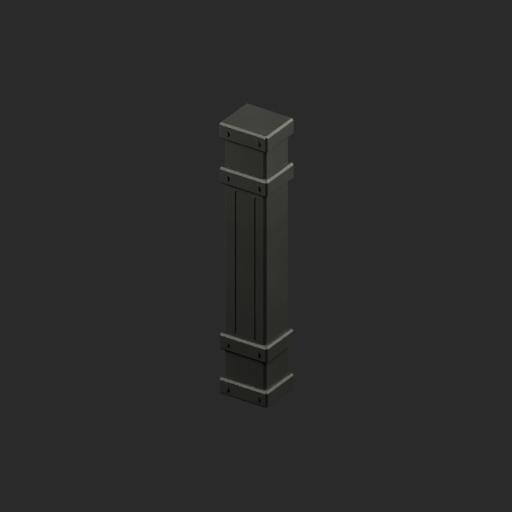
CCS39 · CounterweightCase
468 triangles · 45.0 × 40.0 × 240.0 cm
bottom center · TX09
FBX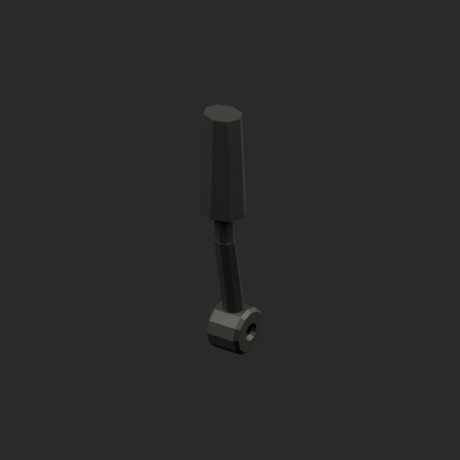
CCS40 · ExistingShortcutLeverHandle
276 triangles · 15.0 × 20.0 × 80.0 cm
bottom center · TX09
FBX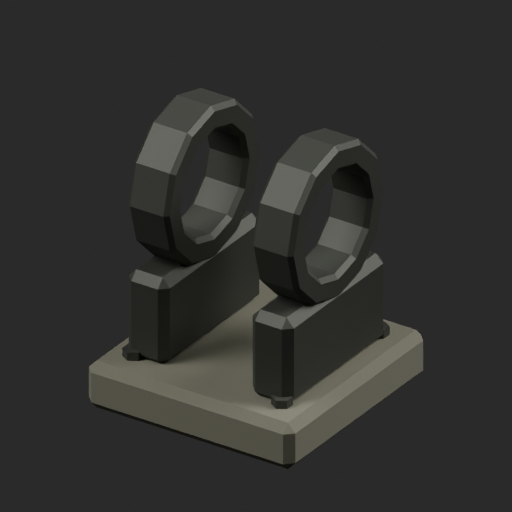
CCS41 · LeverMountBase
596 triangles · 40.0 × 40.0 × 50.0 cm
bottom center · TX01, TX09
FBX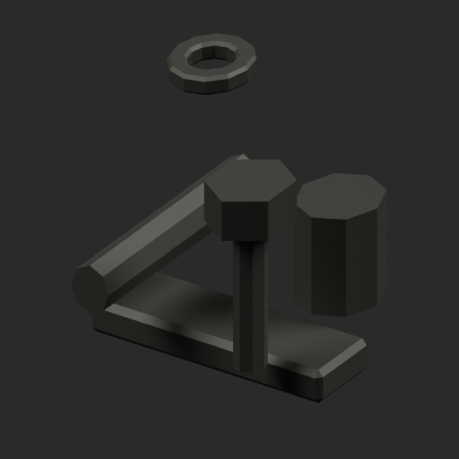
CCS42 · FastenerAndPinKit
340 triangles · 20.0 × 20.0 × 20.0 cm
bottom center · TX09
FBX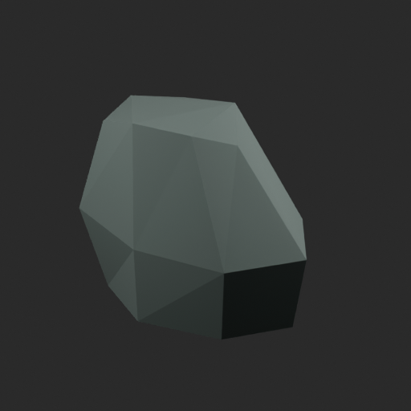
CCS43 · LargeBankRock
38 triangles · 300.0 × 200.0 × 250.0 cm
bottom center · TX04
FBX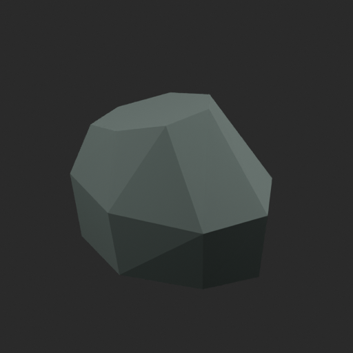
CCS44 · MediumRockWedge
38 triangles · 160.0 × 120.0 × 130.0 cm
bottom center · TX04
FBX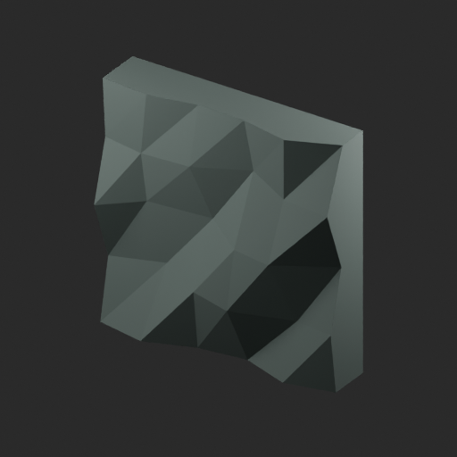
CCS45 · CaveWallPanel
92 triangles · 400.0 × 100.0 × 400.0 cm
bottom center · TX04
FBXCCS46 · CaveInsideCorner
184 triangles · 300.0 × 300.0 × 400.0 cm
bottom center · TX04
FBXCCS47 · CaveCeilingCap
38 triangles · 400.0 × 400.0 × 100.0 cm
bottom center · TX04
FBXCCS48 · WetBankSkirt
102 triangles · 400.0 × 120.0 × 200.0 cm
bottom center · TX04, TX17
FBXCCS49 · TallCliffFace
92 triangles · 400.0 × 150.0 × 600.0 cm
bottom center · TX04
FBXCCS50 · WallToeRubble
266 triangles · 200.0 × 60.0 × 30.0 cm
bottom center · TX04
FBXCCS51 · DeepCanalSurface
2 triangles · 400.0 × 400.0 × 0.0 cm
top contact · FX_Water
FBXCCS52 · FoamEdgeStrip
24 triangles · 200.0 × 50.0 × 0.0 cm
top contact · Foam
FBXCCS53 · WallWaterlineCard
2 triangles · 200.0 × 0.0 × 1.0 cm
bottom center · Wear_DampLeak
FBXCCS54 · BrineGutter
132 triangles · 200.0 × 45.0 × 30.0 cm
bottom center · TX17
FBXCCS55 · WallSpout
64 triangles · 60.0 × 80.0 × 60.0 cm
bottom center · TX17
FBXCCS56 · OutletFlowRibbon
12 triangles · 40.0 × 35.0 × 100.0 cm
bottom center · Drip
FBXCCS57 · DripRippleCard
384 triangles · 80.0 × 80.0 × 1.0 cm
top contact · Ripple
FBXCCS58 · VerticalDripCard
10 triangles · 30.0 × 0.0 × 120.0 cm
bottom center · Drip
FBXCCS59 · FloorPuddleCard
10 triangles · 150.0 × 100.0 × 0.0 cm
top contact · Puddle
FBXCCS60 · LanternHousing
972 triangles · 35.0 × 25.0 × 55.0 cm
bottom center · TX09
FBXCCS61 · LanternGlass
44 triangles · 25.0 × 20.0 × 35.0 cm
bottom center · TX15
FBXCCS62 · WallLanternHook
196 triangles · 15.0 × 25.0 × 25.0 cm
bottom center · TX09
FBXCCS63 · SconceFixture
284 triangles · 30.0 × 35.0 × 60.0 cm
bottom center · TX09
FBXCCS64 · FlameCard
40 triangles · 25.0 × 1.0 × 50.0 cm
bottom center · FX_Flame
FBXCCS65 · LanternRestSet
288 triangles · 45.0 × 40.0 × 60.0 cm
bottom center · TX01, TX08, TX09
FBXCCS66 · BrineBarrel
748 triangles · 90.0 × 90.0 × 120.0 cm
bottom center · TX08, TX09, TX07
FBXCCS67 · CrateBodyAndLid
1212 triangles · 100.0 × 80.0 × 80.0 cm
bottom center · TX08
FBXCCS68 · ClothSack
320 triangles · 70.0 × 60.0 × 100.0 cm
bottom center · TX12, TX14
FBXCCS69 · StorageShelf
968 triangles · 200.0 × 50.0 × 220.0 cm
bottom center · TX08
FBXCCS70 · SaltChunkCluster
220 triangles · 80.0 × 70.0 × 40.0 cm
bottom center · TX05
FBXCCS71 · RopeCoil
1120 triangles · 60.0 × 60.0 × 20.0 cm
bottom center · TX14
FBXCCS72 · RepairPlank
48 triangles · 150.0 × 25.0 × 6.0 cm
bottom center · TX07, TX08
FBXCCS73 · BoltedRepairPlate
108 triangles · 70.0 × 40.0 × 4.0 cm
bottom center · TX09
FBXCCS74 · ClothScrap
96 triangles · 50.0 × 50.0 × 2.0 cm
bottom center · TX12
FBXCCS75 · MaintenanceBucket
428 triangles · 50.0 × 45.0 × 55.0 cm
bottom center · TX08, TX09
FBXCCS76 · LongLadle
116 triangles · 25.0 × 15.0 × 90.0 cm
bottom center · TX08
FBXCCS77 · ReedBasket
1076 triangles · 70.0 × 60.0 × 60.0 cm
bottom center · TX08
FBXCCS78 · MaintenanceNoticeBoard
256 triangles · 70.0 × 3.0 × 100.0 cm
bottom center · TX08, TX16, TX09
FBXCCS79 · SluiceIdentityPlaque
648 triangles · 60.0 × 3.0 × 60.0 cm
bottom center · TX16, TX09
FBXCCS80 · RouteMarkerPlate
20 triangles · 50.0 × 3.0 × 40.0 cm
bottom center · TX16
FBXCCS81 · BankClothMarker
224 triangles · 60.0 × 4.0 × 140.0 cm
bottom center · TX09, TX12
FBXCCS82 · SaltWearDecalCarrier
2 triangles · 120.0 × 0.0 × 70.0 cm
top contact · Wear_SaltResidue
FBXCCS83 · DampStreakDecalCarrier
2 triangles · 150.0 × 0.0 × 120.0 cm
bottom center · Wear_DampLeak
FBXCCS84 · CobwebCorner
204 triangles · 80.0 × 5.0 × 80.0 cm
bottom center · AT01
FBXCCS85 · BrokenFloorTile
72 triangles · 80.0 × 60.0 × 20.0 cm
bottom center · TX01
FBXCCS86 · TimberSupportBeam
68 triangles · 200.0 × 30.0 × 35.0 cm
bottom center · TX08
FBXCCS87 · DiagonalTimberBrace
220 triangles · 120.0 × 25.0 × 120.0 cm
bottom center · TX08, TX09
FBXCCS88 · FloorDrainAndGrille
472 triangles · 80.0 × 80.0 × 15.0 cm
top contact · TX01, TX09, TX17
FBX